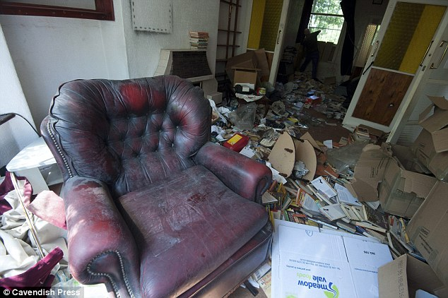

#1 You decide to return to your job as a silver smith and play it cool for the day earning yourself 60 crystals for the day. You return home for the day after getting into an arguement with one of your customers. You soon discover that chairs are turned over tables are flipped and it looks like someone has been going through your house.Or something? What do you do next? ( To find your next choice you may choose this choice or return to the previous screen and select choice 2. Remember, If you select choice 2, to find your outcome you must find the number your adventure correspnds to. The number is listed on the side of your choices:)
 #2 You decide to pick up your small pocket knife. You quickly scan your house to make sure there are no rascaling rodents but you later learn that your secret possesions have been stolen including all your gold and and most of your possesions.